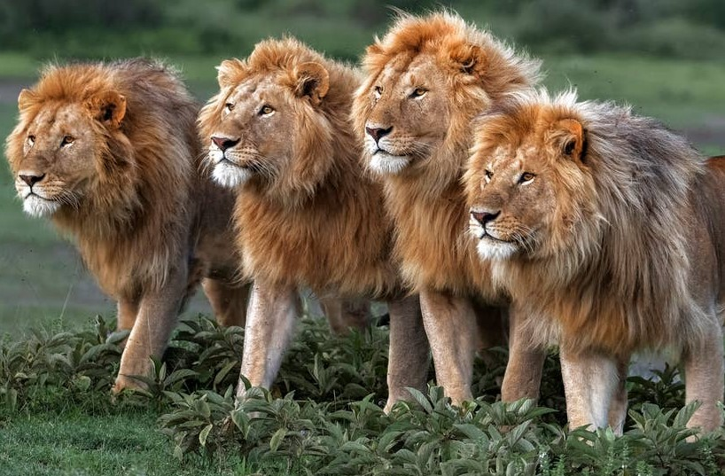

Lion pride

News & Information
Although lions are biologically very similar to household cats sharing about 95.6 percent of DNA. They differ largely in characteristics from other cats. One of the major characteristics being social behavior and organization.

What is a pride of Lions?
Lions live in social groups much like families, and like a family it has structures. And that structure can differ between African and Asian subspecies. Lion prides on average consist of about three males and a dozen females, as well as their young. The females in a pride form the core of a pride, typically do not leave the pride from birth to death.